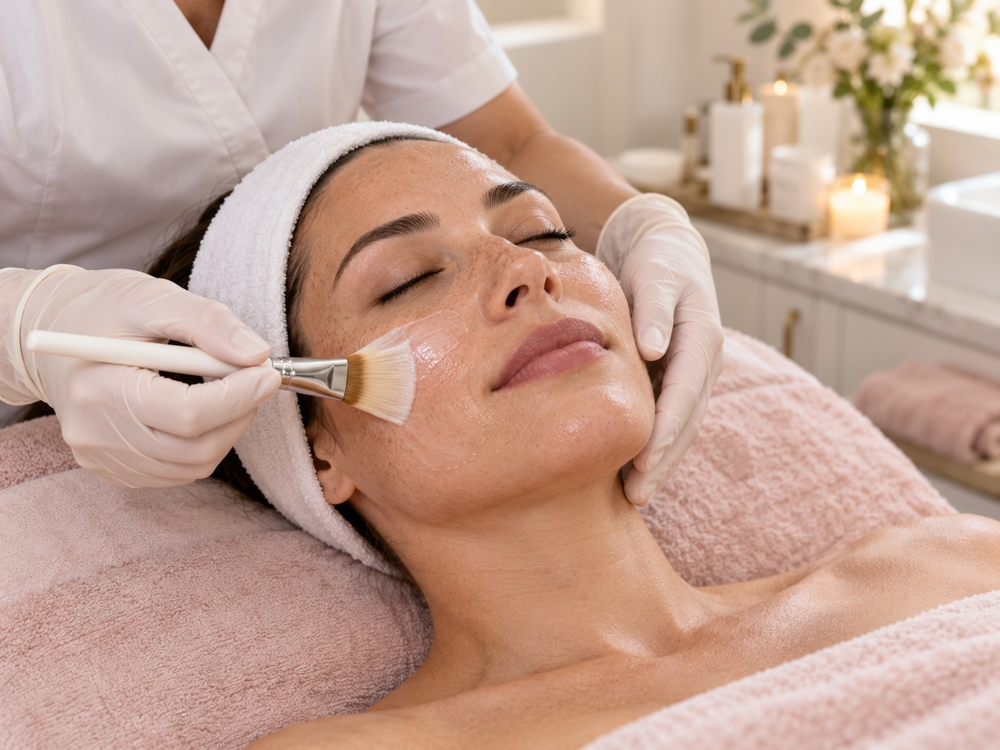

Tell Nicole what you have in mind
Share your skin-care or esthetics questions so Nicole can understand what you are looking for.
Have a question about esthetics or looking for a place to begin? Nicole welcomes a conversation about what you are seeking and the services available.
Esthetics can mean different things to different people. Contact Nicole to ask what is currently offered.
Book online ↗
Tell Nicole what you have in mind, ask which services are currently available, and get clear information before choosing a next step.
Share your skin-care or esthetics questions so Nicole can understand what you are looking for.
Get current details about the esthetics services offered at the practice.
Talk through your questions and arrange an appointment directly with Nicole if you choose.
Choose your service and preferred availability on the request form. Nicole will follow up to confirm a time.